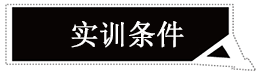

|
2012年“085工程”项目 时尚与工艺 玉雕实训基地建设 附件三： 玉雕实训工作室管理条例
为加强时尚与工艺学院工艺美术品设计制作专业玉雕工作室的建设、完善玉雕实训工作室的规范化管理，特建立如下制度： 一、玉雕工作室主任负责实训工作室日常管理工作和工作室档案管理工作，主任助理负责玉雕实训工作室档案的收集、整理、分类和存档等工作。 二、玉雕实训工作室档案是指在实训教学及机器设备钻石粉工具玉石原材料购置等运行活动中形成的材料 (包括齐全准确完整的文字材料、图纸、报表、照片等)。具体内容为： 1．玉雕实训工作室建立以来教学过程中形成的各种文件材料，包括教学计划、课程表、实训教材、历届学生名单、学生作品记录、学生成绩册、获奖记录、毕业论文、毕业设计手册、学期年度总结报告等。 2．玉雕实训工作室经费投入支出记录、机器设备固定资产账、机器设备保养维修记录、钻石粉工具领用发放记录、玉石原材料库存记录、玉石原材料领用发放记录等。 3．玉雕实训工作室人员基本情况表、工作室人员岗位职责及分工细则、工作量和工作成绩检查考核奖惩记录等。 三、做好玉雕实训工作室机器设备保养维护工作，配备培训必要的兼职维修人员，努力提高机器设备的利用率和完好率。 四、严格玉雕实训工作室历年学生作品的分类存放陈列展示清点保管工作，严格玉雕展示评奖作品的出借回收工作。 五、严格玉雕实训工作室的安全保卫工作，落实安全责任人的岗位职责，提高玉雕实训工作室的安全保卫级别、增加必要的安全设施，定期检查防火、防盗、防事故等方面的安全措施。 六、严格玉雕实训工作室的技术安全和劳动安全保护措施，规范机器设备工具操作使用程序，长发者上机操作一定要戴好安全帽。备足必要的应急药品。 七、做好玉雕实训工作室的环境卫生工作，落实卫生责任人的岗位职责，规劝乱扔杂物的行为，始终保持实训工作室的环境卫生。 八、增加必要的玉雕实训工作室空间，改善工作室学生实训、教师办公、物资存放条件。 2013年4月1日制定 |
| 珠宝设计网站 中国珠宝设计网 国际珠宝网 傲宝网 BACCARAT |
雕塑设计网站 中国雕塑网 |
玉器图库 一些挂件 一些手把件 一些摆件 |
玉器设计与雕刻大赛 上海玉器雕刻神功奖 上海玉器雕刻玉龙奖 北京玉器雕刻天工奖 |
玉器设计与工艺发展动态 玉器设计与工艺过去 玉器设计与工艺现在 玉器设计与工艺未来 |